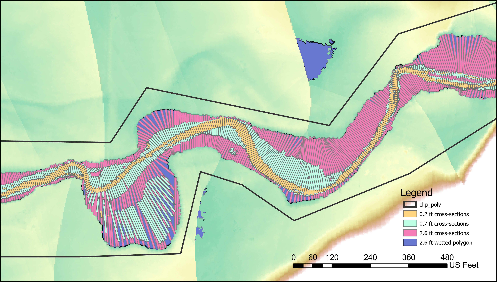

Extracting Geomorphic Covariance Structure (GCS) series¶
In this step we extract width (W) and mean detrended bed elevation (Z), a inverse proxy for depth, across the longitudinal extent of the river segment via dense, evenly spaced, cross-sectional rectangles (see examples). W and Z value are standardized to capture relative cross-sectional geometry, yielding Ws and Zs respectively. Cross-sections with Ws > 0 are wider than the mean, and cross-sections with Zs > 0 are shallower (higher bed elevation) than the mean. Multiplying Ws and Zs, due to the their standardized nature (see interpreting results) calculates their covariance at a given cross section, C(Ws, Zs). Each cross-sections W, Z, Ws, Zs, C(Ws, Zs) value are stored in a csv file that is the basis for Geomorphic Covariance Structure analysis (see Literature).
Inputs¶
The detrended DEM, ras_detren.tif
Key flow stage elevations separated by commas, ex: '0.2,0.7,2.6'
USER INPUT: Cross-section spacing in the same units as the DEM
Spacing should be >= DEM resolution.
Typically defined relative to river width. Past analysis used 1/20th of typical bankfull width.
USER INPUT: Cross-section lengths for each key flow stage separated by commas, ex: '200,400,1000'
In the same units as the DEM
Must be entered corresponding to the key flow stage elevation order. ex: '0.2,0.7,2.6' / '200,400,1000' where 200m cross-sections are used for the 0.2m flow stage.
Important
Please see the choosing cross-section lengths section below before defining cross-section lengths!
Extracted cross-sectional values¶
Values represents the mean of a given cross-sectional polygon, which has a length set by the cross-section spacing parameter.
A new folder, gcs_tables/ is made to store .csv files with all cross-sectional data for each flow stage, ex: gcs_tables/0p2m_gcs_table.csv
Extracted values and their .csv file headers:
Width :
WDetrended bed elevation :
ZMean elevation :
elevation(not detrended)Mean depth :
d_mean= flow stage height - ZWidth / depth ratio :
wd_ratioStandardized width :
Ws= cross-section W - river mean W / river W standard deviationStandardized detrended bed elevation :
Zs= cross-section Z - river mean Z / river Z standard deviationWs, Zs covariance, C(Ws, Zs) :
Ws_Zs= Ws * Zs
Choosing cross-section lengths¶
SHOW EXAMPLE OF TOO SHORT, TOO LONG, and JUST RIGHT
Using a clip polygon (optional)¶
There is the option to further reduce / clip the study area before extracting GCS series. This is done by manually generating a polygon that overlaps with what should be included and defining it's spatial reference to match the project.
We generally use clip polygons for one of two reasons:
To reduce the longitudinal extent of the study area.
To exclude wetted area polygon quality issues related to DEM detrending artefacts.
For example, we can see below that there low lying areas of the floodplain are erroneously included in the 2.6 ft flow stage wetted area polygon. Here we made the clip polygon (black) that to excludes such errors, resulting in the quality cross-section polygons shown in the figure.
{kind=link}
Another strategy is altering cross-section lengths, which can work in most settings where the issues are far from the channel.